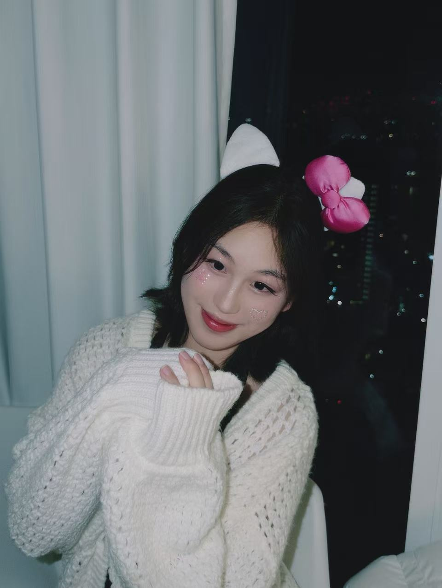
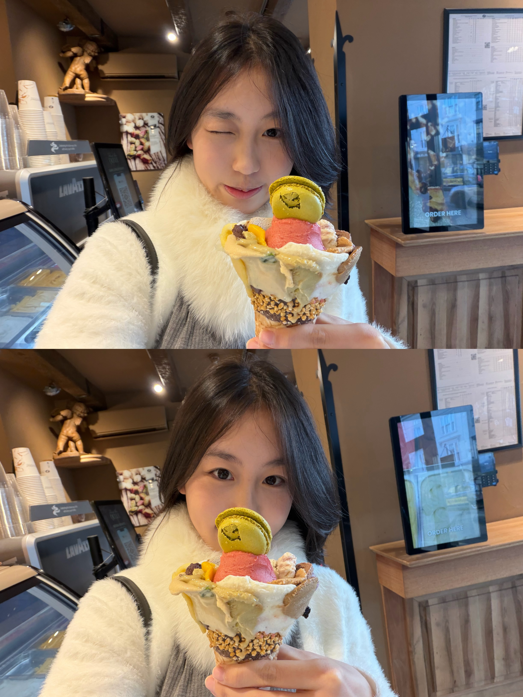

An icon in the making · Shanghai / Paris
SUKY
Actress. Muse. Unapologetically herself.
A cinematic world of stories, style, and self-expression. Welcome to the official universe of SUKY.
Scroll to discover ↓

Your cover shotPHOTO NOT FOUND
THE SUKY ISSUE · 001
01 / INTRODUCTION
Who is
Suky?
Beyond the spotlight
Not just a face.
Not just a name.
A story worth telling.
Not just a name.
A story worth telling.
SUKY is a fictional Chinese screen star and fashion muse whose world moves between cinema, art, and the front rows of fashion.
With an unmistakable point of view and a love for bold storytelling, she turns every appearance into a new chapter.
Creative concept website · Fictional biography and credits.
02 / SELECTED WORK
On Screen.
Fictional filmography
2026
Midnight in Shanghai
LEAD ROLE · FEATURE FILM2025
Velvet Summer
LEAD ROLE · DRAMA2024
After the Rain
SUPPORTING ROLE · FILM03 / THE VISUAL DIARY
Editorial.
Style is a language

Editorial 01PHOTO NOT FOUND
Editorial 02PHOTO NOT FOUND
I create my own.”
04 / GET IN TOUCH
Let's talk.
FOR CREATIVE COLLABORATIONS & INQUIRIES
CONTACT SUKY ↗Replace the placeholder email before publishing.